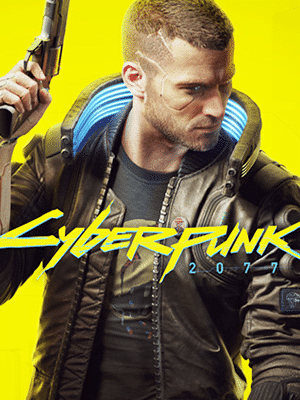

Night City é uma megacidade americana localizada no Estado Livre da Califórnia do Norte, controlada por corporações – legislações locais e nacionais não têm efeito na região. Existe um conflito interno constante entre gangues e outras entidades que procuram dominar a cidade. Night City depende da robótica para todos os aspectos diários como coleta de resíduos, manutenção e transportes públicos. A sua identidade visual é resultado de quatro eras de austero Entropismo, Brega colorido, opulento Neo-Brega e Neo-Militarismo forçado. A internet é administrada pelo exército e corporações.
